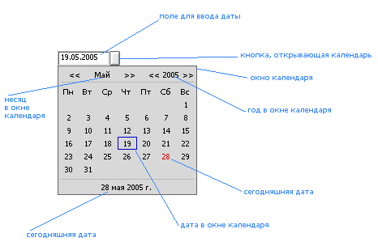

Calendar Control, версия 2.5.
Автор Ал.В. Сариков.
Херсон, Украина, 2006 г.
E-mail: avix@ukrpost.net.
Сайт: http://avix.pp.ru.Распространяется по лицензии BSD (см. файл LICENSE).
Наследован от: BControl
Объявлен в: CalendarControl.h
Библиотека: CalendarControl.a
Функции: далее...
Контрол календаря (Calendar Control) позволяет работать с датами: вводить дату в поле ввода контрола или выбирать дату из календаря. Внешний вид раскрытого контрола (с интерфейсом BeOS) показан на рисунке.

Контрол работает с полной и краткой датой (год записывается полностью или только двумя последними цифами). В первом случае допустимыми являются даты от 1 января 0001 года до 31 декабря 9999 года. Во втором случае контрол принимает даты в пределах столетия, от 01 года столетия до 00 года или от 51 года столетия до 50 года следующего столетия (в зависимости от установленного в конструкторе флага начала столетия). Нумерация месяцев идет с 1 (январь).
Дата вводится в поле ввода как обычный текст (допускается ввод только цифр). Если дата введена некорректно (месяц больше 12, день больше 31 и т.д.), то она будет автоматически исправлена заменой всех неправильных значений на значения текущей системной даты.
Допускается выделение текста в поле ввода, копирование значения поля ввода или его части в Clipboard, удаление символов (вместо удаленного символа появляется 0). Вставка текста в поле ввода запрещена, т.к. это могло бы привести к некорректности даты в контроле.
Нажатие мышью на кнопку рядом с полем ввода даты (или нажатие на клавиатуре Ctrl+стрелка вниз) открывает календарь. Первоначально календарь содержит месяц и год, введенные в поле ввода. Введенный в поле ввода день на календаре заключается в синий прямоугольник.
Если месяц и год совпадают с месяцем и годом системной даты, то сегодняшний день пишется красным цветом.
Навигация по календарю осуществляется с помощью мыши или клавиатуры.
Нажатием мышью на стрелки (значки "<<" и ">>") возле месяца пользователь изменяет месяц. Нажатием на стрелки возле года - год.
Нажатие мышью на нижнюю строку с сегодняшней датой делает ее текущей в календаре (день, месяц, год). Окончательный выбор даты осуществляется нажатием мыши на нужном дне при установленном нужном годе и месяце. Выбранная дата помещается в поле ввода даты контрола.
При навигации с помощью клавиатуры используются клавиши-стрелки (перемещают по дням месяца либо увеличивают и уменьшают месяц и год, в зависимости от фокуса), клавиши Tab или Shift+Tab (изменяют фокус в окне), Enter или пробел (делают сегодняшнюю дату текущей или окончательно выбирают дату, в зависимости от фокуса), ESC или Ctrl+стрелка вверх (закрывают окно без выбора даты).
Снятие фокуса с календаря любым способом (нажатие мышью вне календаря, активизация другого окна какой-либо программы) приводит к его закрытию без помещения даты в поле ввода контрола.
История версий
Версия 1.0:
- самая первая версия.
Версия 2.0:
- добавлена возможность работать с датами, в которых год записан двумя цифрами;
- добавлена клавиатурная навигация;
- исправлен ряд мелких и не очень ошибок (и, вероятно, добавлены новые :)), усовершенствовано отображение контрола;
- кроме русской и английской сделана французская версия контрола (по просьбе Eric Jourde, он же предоставил необходимые переводы и сокращения);
- изменен API: удалены функции GetFormat(), SetFormat(), вместо них добавлены GetFlags(), SetFlags();
- добавлена функция SetDate(), принимающая как параметр текстовую строку.
Версия 2.1 (не была распространена):
- изменения в API: добавлена функция TextView();
- усовершенствовано отображение контрола: вид неактивного контрола сделан отличным от вида активного;
- исправлены ошибки в коде, могущие привести к неверному отображению некоторых частей контрола (спасибо Jan Bungeroth, указавшему на них);
- исправлены ошибки в работе с високосными годами (спасибо Jan Bungeroth, указавшему на них);
- в специальной редакции версии 2.1 были добавлены опции и код, при компиляции в Zeta изменяющие внешний вид контрола и добавляющие локализацию его системными средствами Zeta (вместо англоязычной версии; предложены и разработаны Jan Bungeroth).
Версия 2.5:
- разработан вариант интерфейса, приближенный к интерфейсу подобных контролов в Zeta;
- сделана возможность автоматической настройки интерфейса в зависимости от ОС, в которой запущена программа с контролом (задается параметрами при компиляции и флагами функции SetLook() при выполнении);
- включена (как вариант при компиляции) локализация системными средствами Zeta, реализованная в специальной редакции версии 2.1 (предложена и разработана Jan Bungeroth).
- эти изменения придали коду контрола форму, позволяющую создавать контролы с разными свойствами (внешним видом и языком интерфейса) в зависимости от параметров, заданных при компиляции (подробнее см. файл Compile.html). Это привело к необходимости открыть код (чтобы не распространять все возможные варианты) и изменить лицензию, по которой распространяется контрол, на BSD (см. файл LICENSE);
- улучшены геометрические параметры контрола и окна с календарем;
- усовершенствована навигация в окне с календарем;
| CalendarControl() |
CalendarControl(BPoint p,
const char *name,
int day = 0,
int month = 0,
int year = 0,
uint32 flags = CC_DD_MM_YYYY_FORMAT | CC_FULL_YEAR,
uint32 look = CC_DOT_DIVIDER | CC_AUTO_INTERFACE)Создает контрол календаря. Аргументы:
- p - верхний левый угол контрола в окне, к которому контрол будет присоединен. Размеры контрола устанавливаются автоматически.
- name - имя контрола. Может быть любым.
- day, month, year - день, месяц и год, которые будут установлены в поле ввода даты контрола. По умолчанию равны нулю, а значит, в контроле будет установлена текущая системная дата (см. допустимые значения даты).
- flags - параметры даты - комбинация констант, задающих формат даты в поле ввода контрола, количество цифр в представлении года и (когда год записывается в кратком виде) флаг начала столетия. Два последних флага устанавливаются только при создании контрола и в дальнейшем изменить их невозможно.
- look - параметры интерфейса - комбинация констант, задающих вид разделителя между элементами даты в поле ввода даты и интерфейс (внешний вид) контрола. Флаг интерфейса устанавливается только при создании контрола и не может быть изменен позже. Его указание действительно только для контролов, откомпилированных с универсальным интерфейсом (см. Compile.html). В других случаях флаг интерфейса устанавливается самим конструктором вне зависимости от заданного в параметре look.
После создания контрола его следует присоединить к родителю (окну или BView) функцией AddChild() родителя.
| ~CalendarControl() |
~CalendarControl() Удаляет динамически созданные переменные класса.
| GetDate() см. SetDate() |
| GetFlags() см. SetFlags() |
| GetLook() см. SetLook() |
| GetYearRange() |
void GetYearRange(int *first_year, int *last_year) Возвращает в переменных first_year, last_year первый и последний годы, допустимые для использования в контроле (см. допустимые значения даты).
| GetDate() , SetDate() |
void GetDate(int *day, int *month, int *year) void SetDate(int day = 0, int month = 0, int year = 0) void SetDate(const char *tdate) GetDate() возвращает дату, установленную в контроле. День, месяц, год даты записываются в переменные day, month, year.
SetDate() устанавливает дату в контроле согласно значениям параметров day, month, year либо строки tdate.
Во втором варианте функции SetDate() предполагается, что tdate - запись даты в текстовом виде с учетом флагов, установленных конструктором контрола и функцией SetFlags().
Если задаваемая для SetDate() дата некорректна, неверные день, месяц, год исправляются на значения текущей системной даты (при установленном флаге CC_SHORT_YEAR год отсчитывается в пределах допустимого столетия).
См. также: Text()
| GetFlags() , SetFlags() |
uint32 GetFlags(void) void SetFlags(uint32 flags) GetFlags() возвращает параметры даты как комбинацию констант формата даты, представления года (краткое или полное) и начала столетия.
Каждый из параметров в отдельности получается следующим способом:
if((GetFlags() & CC_MM_DD_YYYY_FORMAT) == CC_MM_DD_YYYY_FORMAT) // формат даты
if((GetFlags() & CC_SHORT_YEAR) == CC_SHORT_YEAR) // представление года
if((GetFlags() & CC_HALF_CENTURY) == CC_HALF_CENTURY) // начало столетия
Замечание: в приведенных выражениях вы не можете использовать константы CC_DD_MM_YYYY_FORMAT, CC_FULL_YEAR и CC_FULL_CENTURY после знака "&" (но можно после знака "=="), т.к. эти константы равны нулю и операция "&" даст в результате 0 вне зависимости от действительно установленных флагов.
SetFlags() устанавливает формат даты в контроле. Флаги представления года и начала столетия игнорируются.
| GetLook() , SetLook() |
uint32 GetLook(void) void SetLook(uint32 look) GetLook() возвращает параметры внешнего вида контрола как комбинацию разделителя элементов даты в контроле и флага интерфейса.
Каждый из параметров в отдельности получается следующим способом:
if((GetLook() & CC_ALL_DIVIDERS) == CC_DOT_DIVIDER) // разделители, после знака "==" ставится любой из разделителей
if((GetLook() & CC_ALL_INTERFACES) == CC_BEOS_INTERFACE) // интерфейсы, после знака "==" ставится любой из флагов интерфейса (см. замечание)
Замечание: возвращаемый флаг интерфейса принимает только значения CC_BEOS_INTERFACE и CC_ZETA_INTERFACE, т.е. флаг, определяющий внешний вид контрола в данный момент (даже если в конструкторе был задан CC_AUTO_INTERFACE). Информацию о допустимости использования флага CC_AUTO_INTERFACE (т.е. был ли задан соответствующий параметр при компиляции) можно получить, анализируя результат выполнения функции Version().
SetLook() устанавливает значение разделителя элементов даты в поле ввода даты контрола. Флаг интерфейса игнорируется.
| Text() |
const char *Text(void) const Возвращает дату в контроле в виде текста, используя текущие формат, представление года и разделитель.
| TextView() |
BTextView *TextView(void) const Возвращает указатель на объект BTextView, принадлежащий контролу, в котором происходит редактирование даты. Используйте этот результат только для чтения, иначе работа контрола может быть нарушена.
| Version() |
const char *Version(void) Возвращает текстовую строку, описывающую версию и параметры компиляции библиотеки с контролом.
| Форматы |
Константа CC_DD_MM_YYYY_FORMAT CC_MM_DD_YYYY_FORMAT Константы определяют формат даты в контроле (DD.MM.YYYY или MM.DD.YYYY).
См. также: SetFlags(), CalendarControl()
| Представление года |
Константа CC_FULL_YEAR CC_SHORT_YEAR Константы задают число цифр в представлении года (DD.MM.YYYY или DD.MM.YY).
См. также: CalendarControl()
| Начало столетия |
Константа CC_FULL_CENTURY CC_HALF_CENTURY Если год представлен двумя цифрами, то эти константы задают границы столетия, в пределах которого контрол принимает значения: либо с 01 года столетия до 00 года, либо с 51 года столетия до 50 года следующего столетия.
См. также: CalendarControl()
| Разделители |
Константа CC_DOT_DIVIDER CC_SLASH_DIVIDER CC_MINUS_DIVIDER CC_ALL_DIVIDERS Первые три константы задают разделитель элементов даты (дня, месяца и года) в поле ввода даты контрола (DD.MM.YYYY, DD/MM/YYYY или DD-MM-YYYY).
CC_ALL_DIVIDERS используется для выделения разделителей из результата, возвращаемого функцией GetLook().
См. также: GetLook(), CalendarControl()
| Интерфейс |
Константа CC_AUTO_INTERFACE CC_BEOS_INTERFACE CC_ZETA_INTERFACE CC_ALL_INTERFACES Первые три константы задают внешний вид (интерфейс) контрола (определяемый операционной системой, BeOS или Zeta). Интерфейс устанавливается при создании контрола, зависит также от параметров при компиляции (см. Compile.html).
CC_ALL_INTERFACES используется для выделения интерфейсов из результата, возвращаемого функцией GetLook().
См. также: GetLook(), CalendarControl()